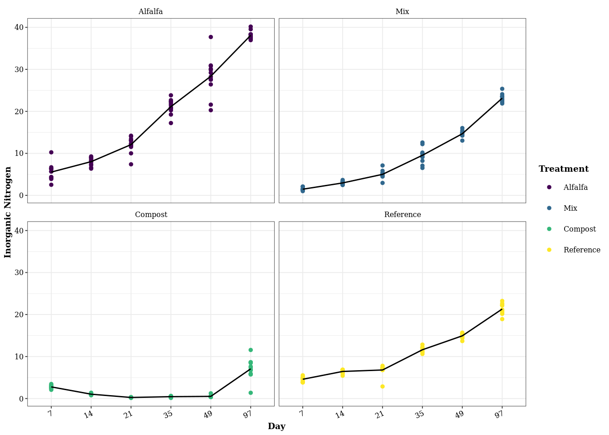

library(phyloseq)
library(vegan)## Loading required package: permute## Loading required package: lattice## This is vegan 2.5-6library(tidyverse)## ── Attaching packages ───────────────────── tidyverse 1.3.0 ──## ✓ ggplot2 3.2.1 ✓ purrr 0.3.3
## ✓ tibble 2.1.3 ✓ dplyr 0.8.3
## ✓ tidyr 1.0.0 ✓ stringr 1.4.0
## ✓ readr 1.3.1 ✓ forcats 0.4.0## ── Conflicts ──────────────────────── tidyverse_conflicts() ──
## x dplyr::filter() masks stats::filter()
## x dplyr::lag() masks stats::lag()library(nlme)##
## Attaching package: 'nlme'## The following object is masked from 'package:dplyr':
##
## collapselibrary(emmeans)## Welcome to emmeans.
## NOTE -- Important change from versions <= 1.41:
## Indicator predictors are now treated as 2-level factors by default.
## To revert to old behavior, use emm_options(cov.keep = character(0))library(ggpubr)## Loading required package: magrittr##
## Attaching package: 'magrittr'## The following object is masked from 'package:purrr':
##
## set_names## The following object is masked from 'package:tidyr':
##
## extractlibrary(agricolae)## Registered S3 methods overwritten by 'klaR':
## method from
## predict.rda vegan
## print.rda vegan
## plot.rda vegan## Registered S3 method overwritten by 'spdep':
## method from
## plot.mst apelibrary(broom)
library(xtable)
library(viridis)## Loading required package: viridisLiteSoil for the incubation was collected from organic alfalfa plots, surface cores were collected from all plots and composited into a bulk soil sample. Bulk soil was sieved to 2mm and allowed to air-dry before microcosm construction.
The characteristics of the starting soil are as follows:
inc.raw.physeq <- readRDS("../data/incubation_physeq_Aug18.RDS")
inc.physeq <- subset_samples(inc.raw.physeq, day %in% c("7",
"14",
"21",
"35",
"49",
"97"))
#Rename treatments to more informative titles
data <- data.frame(sample_data(inc.physeq)) %>%
mutate(treatment = recode(treatment,
'Control' = 'Reference',
'CompAlfa' = 'Mix')) %>%
mutate(C_N = C_flash / N_flash, Inorganic_N = NH3 + NO3) %>%
mutate(TreatmentAndDay = paste(treatment, day))
data$treatment <- relevel(data$treatment, ref = "Reference")
data$day <- as.factor(data$day)
rownames(data) <- data$i_id
sample_data(inc.physeq) <- data
sample_data(inc.physeq)$day <- as.factor(sample_data(inc.physeq)$day)inc.model.data <- lme(Inorganic_N~treatment * day, random=~1|replication
, data = data
, weights = varIdent(form= ~1|day*treatment)
, control = lmeControl(opt = "optim", msVerbose = TRUE))## initial value 859.150640
## iter 10 value 678.308535
## iter 20 value 671.048851
## final value 671.045517
## convergeddata1 <- summary(inc.model.data)
data1## Linear mixed-effects model fit by REML
## Data: data
## AIC BIC logLik
## 717.24 892.4615 -309.62
##
## Random effects:
## Formula: ~1 | replication
## (Intercept) Residual
## StdDev: 0.00197428 0.5447045
##
## Variance function:
## Structure: Different standard deviations per stratum
## Formula: ~1 | day * treatment
## Parameter estimates:
## 7*Reference 14*Alfalfa 14*Compost 14*Mix 21*Reference 21*Alfalfa
## 1.00000000 1.76558141 0.30371455 0.68543840 2.33468970 3.44060742
## 21*Compost 21*Mix 35*Reference 35*Alfalfa 35*Compost 35*Mix
## 0.09917554 1.76210704 1.15522967 3.17335598 0.30517920 3.25546175
## 49*Reference 49*Alfalfa 49*Compost 49*Mix 97*Reference 97*Alfalfa
## 1.05455564 8.24685463 0.45484879 1.35284130 2.25152571 1.73789469
## 97*Compost 97*Mix 7*Alfalfa 7*Compost 7*Mix 14*Reference
## 4.46398613 1.76122145 3.58609441 0.73630130 0.58819499 0.80774102
## Fixed effects: Inorganic_N ~ treatment * day
## Value Std.Error DF t-value p-value
## (Intercept) 4.592361 0.1572437 253 29.20538 0.0000
## treatmentAlfalfa 0.954389 0.5854005 253 1.63032 0.1043
## treatmentMix -3.119944 0.1824268 253 -17.10245 0.0000
## treatmentCompost -1.822611 0.1952685 253 -9.33387 0.0000
## day14 1.861194 0.2021315 253 9.20784 0.0000
## day21 2.205451 0.3993708 253 5.52231 0.0000
## day35 7.023938 0.2402550 253 29.23534 0.0000
## day49 10.341477 0.2285211 253 45.25392 0.0000
## day97 16.720556 0.3873844 253 43.16270 0.0000
## treatmentAlfalfa:day14 0.626472 0.6602281 253 0.94887 0.3436
## treatmentMix:day14 -0.369361 0.2470384 253 -1.49516 0.1361
## treatmentCompost:day14 -3.596528 0.2377864 253 -15.12503 0.0000
## treatmentAlfalfa:day21 4.332861 0.8775863 253 4.93725 0.0000
## treatmentMix:day21 1.329944 0.4947967 253 2.68786 0.0077
## treatmentCompost:day21 -4.719972 0.4161067 253 -11.34318 0.0000
## treatmentAlfalfa:day35 8.552861 0.7903663 253 10.82139 0.0000
## treatmentMix:day35 1.049444 0.5729884 253 1.83153 0.0682
## treatmentCompost:day35 -9.347056 0.2709793 253 -34.49361 0.0000
## treatmentAlfalfa:day49 12.474944 1.4324000 253 8.70912 0.0000
## treatmentMix:day49 2.859111 0.3256191 253 8.78054 0.0000
## treatmentCompost:day49 -12.595139 0.2659733 253 -47.35491 0.0000
## treatmentAlfalfa:day97 15.834278 0.7366901 253 21.49381 0.0000
## treatmentMix:day97 4.938778 0.4850940 253 10.18107 0.0000
## treatmentCompost:day97 -12.420194 0.8100466 253 -15.33269 0.0000
## Correlation:
## (Intr) trtmnA trtmnM trtmnC day14 day21 day35 day49
## treatmentAlfalfa -0.269
## treatmentMix -0.862 0.232
## treatmentCompost -0.805 0.216 0.694
## day14 -0.778 0.209 0.671 0.626
## day21 -0.394 0.106 0.339 0.317 0.306
## day35 -0.654 0.176 0.564 0.527 0.509 0.258
## day49 -0.688 0.185 0.593 0.554 0.535 0.271 0.450
## day97 -0.406 0.109 0.350 0.327 0.316 0.160 0.266 0.279
## treatmentAlfalfa:day14 0.238 -0.887 -0.205 -0.192 -0.306 -0.094 -0.156 -0.164
## treatmentMix:day14 0.637 -0.171 -0.738 -0.513 -0.818 -0.251 -0.417 -0.438
## treatmentCompost:day14 0.661 -0.178 -0.570 -0.821 -0.850 -0.260 -0.433 -0.455
## treatmentAlfalfa:day21 0.179 -0.667 -0.154 -0.144 -0.139 -0.455 -0.117 -0.123
## treatmentMix:day21 0.318 -0.085 -0.369 -0.256 -0.247 -0.807 -0.208 -0.219
## treatmentCompost:day21 0.378 -0.102 -0.326 -0.469 -0.294 -0.960 -0.247 -0.260
## treatmentAlfalfa:day35 0.199 -0.741 -0.171 -0.160 -0.155 -0.078 -0.304 -0.137
## treatmentMix:day35 0.274 -0.074 -0.318 -0.221 -0.213 -0.108 -0.419 -0.189
## treatmentCompost:day35 0.580 -0.156 -0.500 -0.721 -0.451 -0.228 -0.887 -0.399
## treatmentAlfalfa:day49 0.110 -0.409 -0.095 -0.088 -0.085 -0.043 -0.072 -0.160
## treatmentMix:day49 0.483 -0.130 -0.560 -0.389 -0.376 -0.190 -0.316 -0.702
## treatmentCompost:day49 0.591 -0.159 -0.510 -0.734 -0.460 -0.233 -0.387 -0.859
## treatmentAlfalfa:day97 0.213 -0.795 -0.184 -0.172 -0.166 -0.084 -0.140 -0.147
## treatmentMix:day97 0.324 -0.087 -0.376 -0.261 -0.252 -0.128 -0.212 -0.223
## treatmentCompost:day97 0.194 -0.052 -0.167 -0.241 -0.151 -0.076 -0.127 -0.134
## day97 trA:14 trM:14 trC:14 trA:21 trM:21 trC:21 trA:35
## treatmentAlfalfa
## treatmentMix
## treatmentCompost
## day14
## day21
## day35
## day49
## day97
## treatmentAlfalfa:day14 -0.097
## treatmentMix:day14 -0.258 0.251
## treatmentCompost:day14 -0.268 0.260 0.696
## treatmentAlfalfa:day21 -0.073 0.591 0.114 0.118
## treatmentMix:day21 -0.129 0.076 0.272 0.210 0.367
## treatmentCompost:day21 -0.153 0.090 0.241 0.385 0.437 0.775
## treatmentAlfalfa:day35 -0.081 0.657 0.127 0.132 0.494 0.063 0.075
## treatmentMix:day35 -0.111 0.065 0.235 0.181 0.049 0.117 0.104 0.127
## treatmentCompost:day35 -0.236 0.138 0.369 0.592 0.104 0.184 0.338 0.270
## treatmentAlfalfa:day49 -0.045 0.362 0.070 0.073 0.273 0.035 0.041 0.303
## treatmentMix:day49 -0.196 0.115 0.414 0.319 0.087 0.207 0.182 0.096
## treatmentCompost:day49 -0.240 0.141 0.376 0.603 0.106 0.188 0.345 0.118
## treatmentAlfalfa:day97 -0.526 0.705 0.136 0.141 0.530 0.068 0.081 0.589
## treatmentMix:day97 -0.799 0.077 0.278 0.214 0.058 0.139 0.122 0.064
## treatmentCompost:day97 -0.478 0.046 0.124 0.198 0.035 0.062 0.113 0.039
## trM:35 trC:35 trA:49 trM:49 trC:49 trA:97 trM:97
## treatmentAlfalfa
## treatmentMix
## treatmentCompost
## day14
## day21
## day35
## day49
## day97
## treatmentAlfalfa:day14
## treatmentMix:day14
## treatmentCompost:day14
## treatmentAlfalfa:day21
## treatmentMix:day21
## treatmentCompost:day21
## treatmentAlfalfa:day35
## treatmentMix:day35
## treatmentCompost:day35 0.372
## treatmentAlfalfa:day49 0.030 0.064
## treatmentMix:day49 0.178 0.280 0.112
## treatmentCompost:day49 0.162 0.529 0.137 0.603
## treatmentAlfalfa:day97 0.059 0.124 0.325 0.103 0.126
## treatmentMix:day97 0.120 0.188 0.036 0.211 0.192 0.420
## treatmentCompost:day97 0.053 0.174 0.021 0.094 0.177 0.251 0.382
##
## Standardized Within-Group Residuals:
## Min Q1 Med Q3 Max
## -3.084658843 -0.517233406 -0.002336317 0.575176709 2.957202057
##
## Number of Observations: 288
## Number of Groups: 12anova.lme(inc.model.data)## numDF denDF F-value p-value
## (Intercept) 1 253 5557.052 <.0001
## treatment 3 253 10708.149 <.0001
## day 5 253 2539.950 <.0001
## treatment:day 15 253 488.145 <.0001anova(inc.model.data)## numDF denDF F-value p-value
## (Intercept) 1 253 5557.052 <.0001
## treatment 3 253 10708.149 <.0001
## day 5 253 2539.950 <.0001
## treatment:day 15 253 488.145 <.0001anova(summary(inc.model.data))## numDF denDF F-value p-value
## (Intercept) 1 253 5557.052 <.0001
## treatment 3 253 10708.149 <.0001
## day 5 253 2539.950 <.0001
## treatment:day 15 253 488.145 <.0001#xtable(anova(summary(inc.model.data)))
em <- emmeans(inc.model.data, c("day", "treatment"), data = data)
em## day treatment emmean SE df lower.CL upper.CL
## 7 Reference 4.592 0.1572 11 4.246 4.938
## 14 Reference 6.454 0.1270 11 6.174 6.733
## 21 Reference 6.798 0.3671 11 5.990 7.606
## 35 Reference 11.616 0.1817 11 11.216 12.016
## 49 Reference 14.934 0.1658 11 14.569 15.299
## 97 Reference 21.313 0.3540 11 20.534 22.092
## 7 Alfalfa 5.547 0.5639 11 4.306 6.788
## 14 Alfalfa 8.034 0.2776 11 7.423 8.645
## 21 Alfalfa 12.085 0.5410 11 10.894 13.276
## 35 Alfalfa 21.124 0.4990 11 20.025 22.222
## 49 Alfalfa 28.363 1.2968 11 25.509 31.217
## 97 Alfalfa 38.102 0.2733 11 37.500 38.703
## 7 Mix 1.472 0.0925 11 1.269 1.676
## 14 Mix 2.964 0.1078 11 2.727 3.201
## 21 Mix 5.008 0.2771 11 4.398 5.618
## 35 Mix 9.546 0.5119 11 8.419 10.672
## 49 Mix 14.673 0.2127 11 14.205 15.141
## 97 Mix 23.132 0.2769 11 22.522 23.741
## 7 Compost 2.770 0.1158 11 2.515 3.025
## 14 Compost 1.034 0.0478 11 0.929 1.140
## 21 Compost 0.255 0.0156 11 0.221 0.290
## 35 Compost 0.447 0.0480 11 0.341 0.552
## 49 Compost 0.516 0.0715 11 0.359 0.674
## 97 Compost 7.070 0.7019 11 5.525 8.615
##
## Degrees-of-freedom method: containment
## Confidence level used: 0.95sum_em <- summary(em)
sum_em## day treatment emmean SE df lower.CL upper.CL
## 7 Reference 4.592 0.1572 11 4.246 4.938
## 14 Reference 6.454 0.1270 11 6.174 6.733
## 21 Reference 6.798 0.3671 11 5.990 7.606
## 35 Reference 11.616 0.1817 11 11.216 12.016
## 49 Reference 14.934 0.1658 11 14.569 15.299
## 97 Reference 21.313 0.3540 11 20.534 22.092
## 7 Alfalfa 5.547 0.5639 11 4.306 6.788
## 14 Alfalfa 8.034 0.2776 11 7.423 8.645
## 21 Alfalfa 12.085 0.5410 11 10.894 13.276
## 35 Alfalfa 21.124 0.4990 11 20.025 22.222
## 49 Alfalfa 28.363 1.2968 11 25.509 31.217
## 97 Alfalfa 38.102 0.2733 11 37.500 38.703
## 7 Mix 1.472 0.0925 11 1.269 1.676
## 14 Mix 2.964 0.1078 11 2.727 3.201
## 21 Mix 5.008 0.2771 11 4.398 5.618
## 35 Mix 9.546 0.5119 11 8.419 10.672
## 49 Mix 14.673 0.2127 11 14.205 15.141
## 97 Mix 23.132 0.2769 11 22.522 23.741
## 7 Compost 2.770 0.1158 11 2.515 3.025
## 14 Compost 1.034 0.0478 11 0.929 1.140
## 21 Compost 0.255 0.0156 11 0.221 0.290
## 35 Compost 0.447 0.0480 11 0.341 0.552
## 49 Compost 0.516 0.0715 11 0.359 0.674
## 97 Compost 7.070 0.7019 11 5.525 8.615
##
## Degrees-of-freedom method: containment
## Confidence level used: 0.95levels(data$treatment)## [1] "Reference" "Alfalfa" "Mix" "Compost"class(data$treatment)## [1] "factor"data$treatment <- ordered(data$treatment, levels = c("Alfalfa", "Mix", "Compost", "Reference"))theme_set(theme_bw())
p <- ggplot(data = data, aes(x = day, y = Inorganic_N)) +
geom_point(aes(colour = treatment), size = 1) +
stat_summary(aes(group = treatment), fun.y = mean, geom = "line", size = .5, colour = "black") +
xlab("Day") +
ylab("Inorganic Nitrogen") +
labs(color = "Treatment") +
facet_wrap(~treatment) +
scale_color_viridis(discrete = T, option = "viridis")
theme_my <- function(base_size = 7, base_family = "Palatino")
{
txt <- element_text(size = 6, colour = "black", face = "plain")
bold_txt <- element_text(size = 7, colour = "black", face = "bold")
theme_bw(base_size = base_size, base_family = base_family) +
theme(
legend.key = element_blank(),
strip.background = element_blank(),
text = txt,
plot.title = txt,
axis.title = bold_txt,
axis.text = txt,
axis.text.x = element_text(angle = 25, vjust = 1, hjust = 1),
legend.title = bold_txt,
legend.text = txt,
strip.text.x = txt)
}
p + theme_my()
ggsave("../Figures/Fig_3.tiff", plot = p + theme_my(), device = "tiff", width = 90, height = 90, units = "mm", dpi = 500)